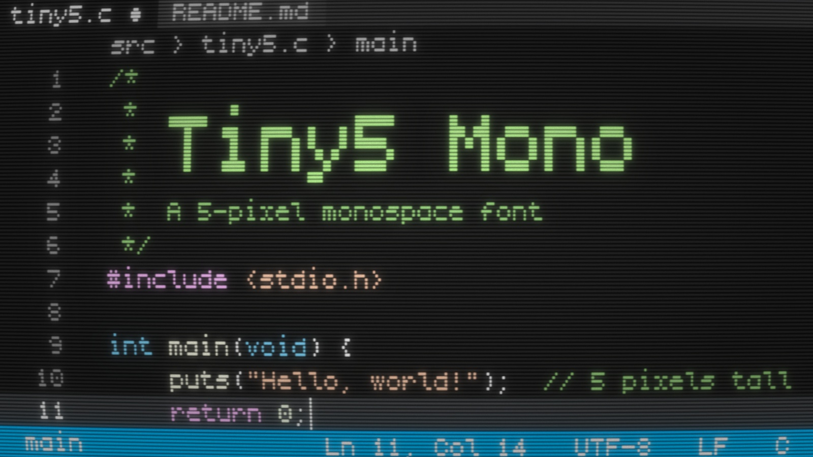
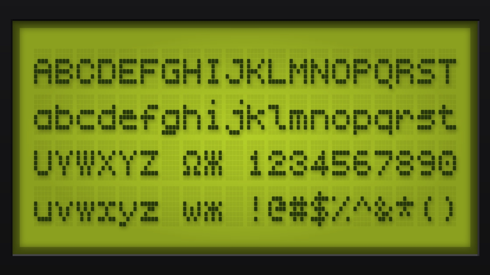
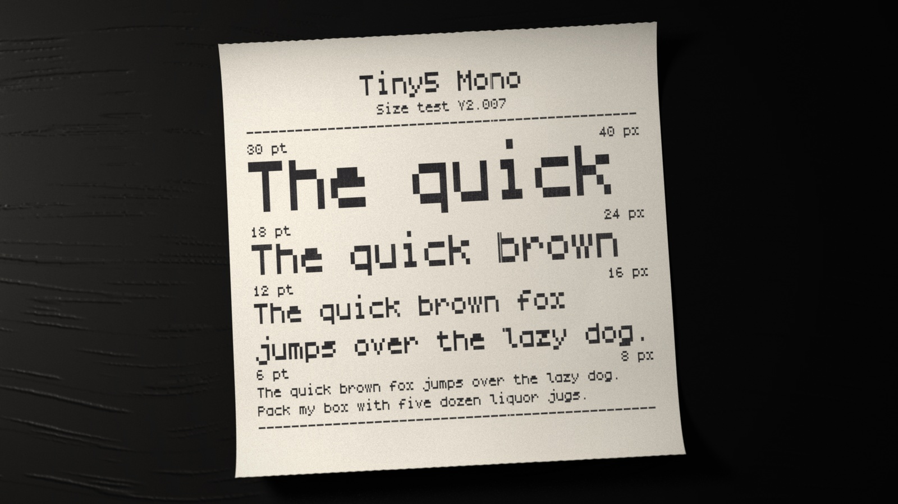
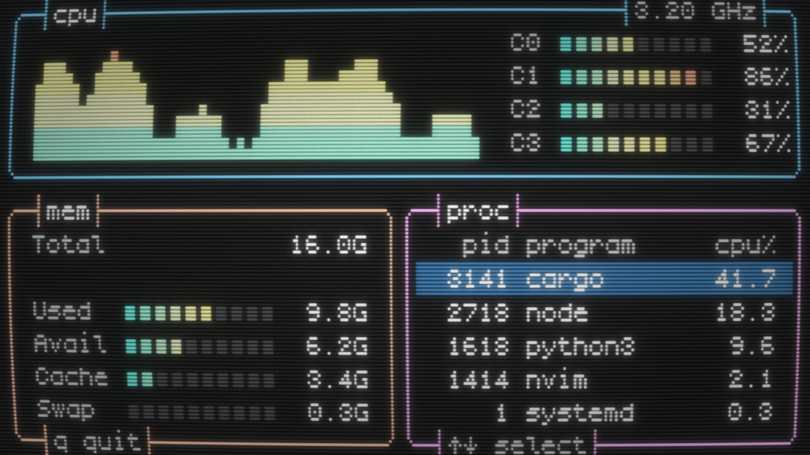
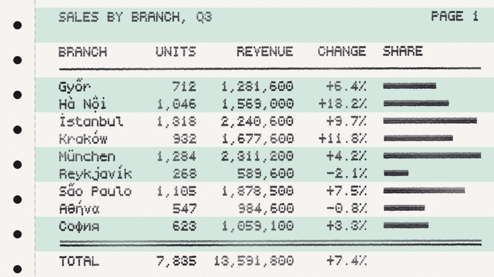

Tiny5 Mono is the monospaced member of the Tiny5 family, a compact 5-pixel variable font that captures the essence of 1980s–90s digital minimalism. It brings the clarity and charm of Tiny5 to code editors, terminals and text-mode interfaces. Its box-drawing and block characters fill the whole cell, so frames and sextant graphics join seamlessly.
Like those of the text modes of 1980s terminals and PCs, its pixels are taller than they are wide. Lines of code stay compact, while the letterforms keep all the legibility of Tiny5.
Like Tiny5, it features six variable axes — Weight, Width, Italic, Roundness, Bleed and Jitter. Weight matches the stroke to your color theme, Width trades columns for breathing room, and Roundness, Bleed and Jitter take its look from crisp geometric shapes and sharp LCD edges to the soft glow of CRT monitors and the subtle ink spread of dot-matrix printers.
Tiny5 Mono shares its design with Tiny5 and Tiny5 Duo. Where Tiny5 sets text proportionally with one-pixel strokes, and Tiny5 Duo doubles its stems for bolder emphasis, Tiny5 Mono widens its narrow letters to a fixed 5-pixel width, in a cell six pixels wide and nine tall.
Tiny5 Mono excels at evoking retro-futurism, constrained-tech nostalgia and clean minimalism. It's especially well-suited for:
It shares the broad language support of Tiny5, covering Latin, Greek, Cyrillic and Armenian scripts across 974 languages, and adds complete sets of box-drawing characters and block elements, plus the sextants and much of Symbols for Legacy Computing, for a total of 2,287 glyphs.
For crisp rows of pixels, set the font size to increments of 6 pt (8 px). To make the pixels square, set the Width axis to 143.82.
To contribute to the project, visit github.com/Gissio/font_Tiny5Mono.




